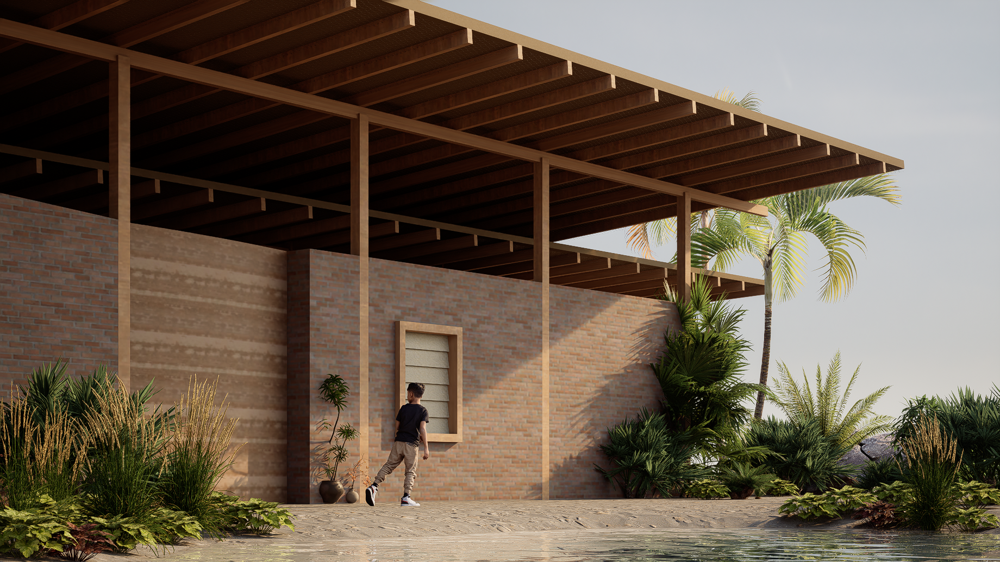
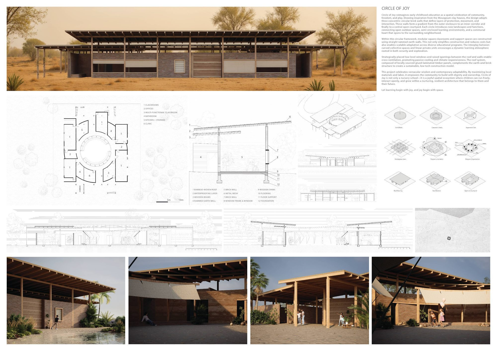

A community school conceived as a simple, breathable timber structure. Deep roofs and open-air circulation shade the classrooms while local materials and a clear post-and-beam logic keep the building easy to build and to maintain — an architecture of shade, air, and gathering.
一所被构想为简洁、可呼吸木结构的社区学校。深远的屋面与露天流线为教室遮荫，在地材料与清晰的梁柱逻辑让建筑易于建造与维护——一种关于遮荫、通风与聚集的建筑。

